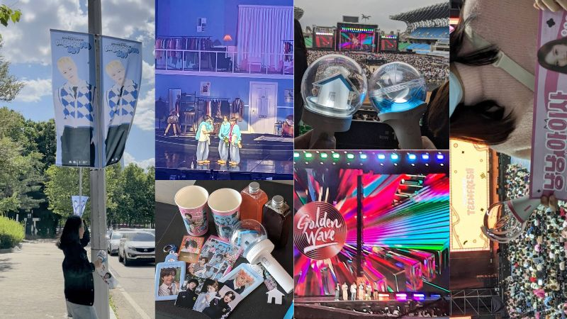
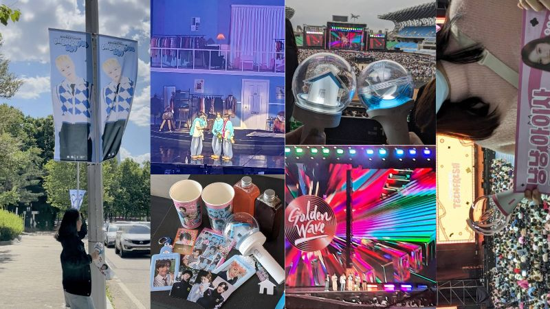
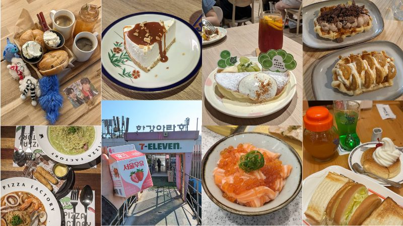
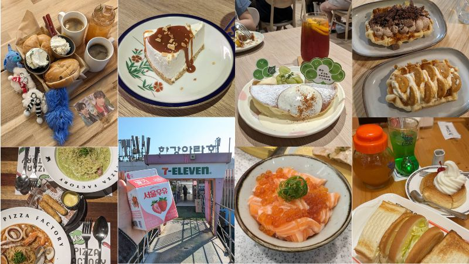

關於我—王書姵

+886 20040617
 

 

我是個充滿夢想和熱情的人。我對韓流的熱愛展現了我對文化的欣賞和追求。
雖然工作有時候讓我感到疲憊，但我仍然堅持自己的理想，這種毅力令人欽佩。
我的生活或許看似規律，但其實充滿了小確幸。
我對咖啡的熱愛，說明了我善於發現生活中的樂趣。
最重要的是，我是一個溫暖、有趣、富有同情心的人。
我的存在就像是一杯香醇的咖啡，總能讓周圍的人感到愉悅和溫暖。
Description by Wordware
當前播放的歌曲：BOYNEXTDOOR - 20